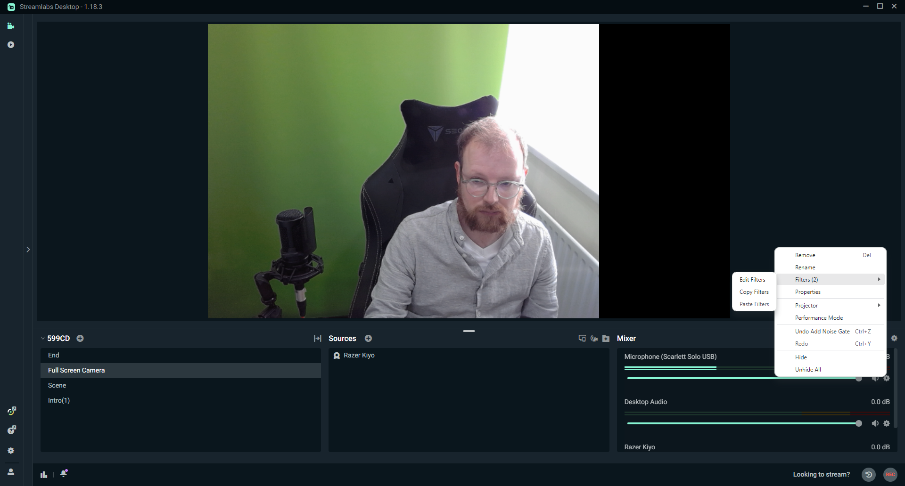
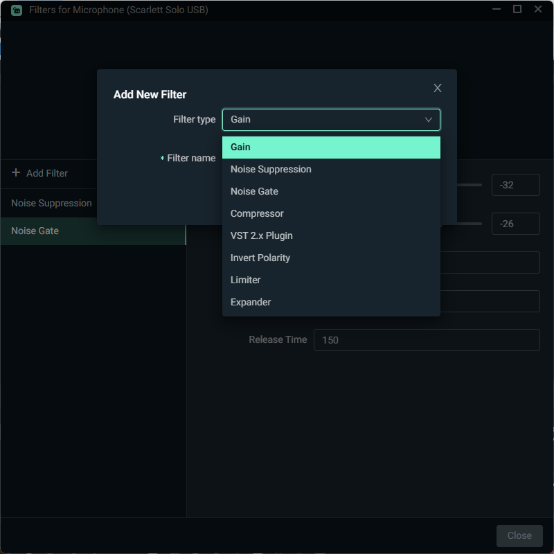
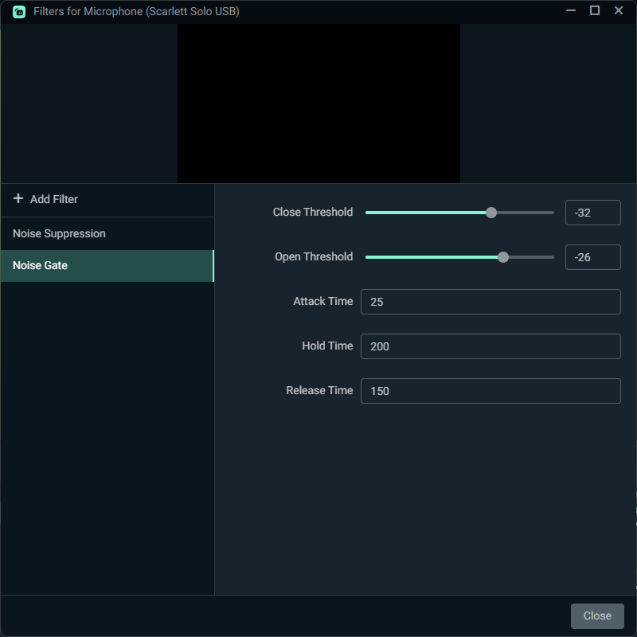
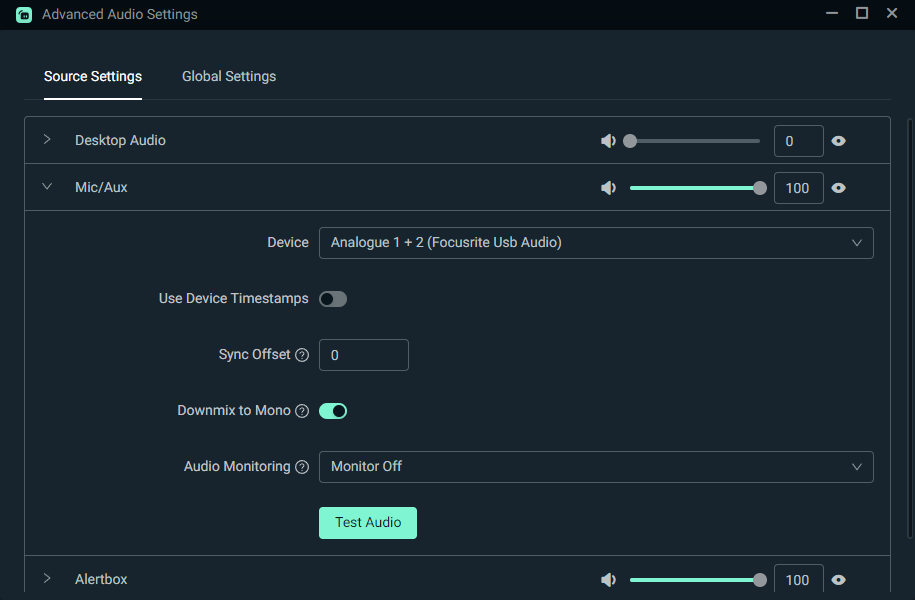
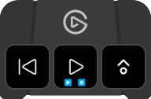
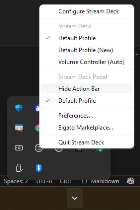
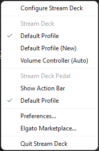
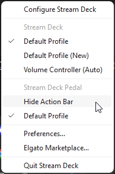

Previous purchases: Streaming Equipment, Streaming Equipment 2 Streaming Equipment 3
StreamDeck Toolkit, StreamDeck Plugins, Jeff Goldblum StreamDeck Action
Audio Filters
Mixer

Add New - Filter

Filters

Filters - Options

Downmix to Mono
Microphone ⚙️ | Properties


Route audio to the central channel instead of left or right stereo channels
Green-screen
I recently bought a Green Screen XL from Elgato (Streaming Equipment 3) and now need to setup the scenes.
Open up Streamlabs Desktop, go to your camera source, right-click on it and go to filters.
From there, you will see chroma key as a filter type. You’re going to see a many different settings that you’re going to have to play around with to find what works for you. There is no one correct answer for these settings as everybody’s lighting situations different, hair is different, skin color is different, and background is different, which is why you’re going to have to play around with it until you refine it down.
Videos
🔗 Links
How to Improve Mic Quality in Streamlabs Desktop Last Updated on January 28, 2022
How to set up a Green Screen in Streamlabs Last Updated on October 11, 2023
Green Screen 101: Why Do You Need It and How To Use It Last Updated on May 02, 2024
Stream Deck Pedal
How cool is the teamDeck Pedal Action Bar!! It shows you what actions you have configured for each pedal and floats above any app on your screen.

If you close this, click in the Task Bar icon to get the Stream Deck options then Stream Deck Pedal will have a Show/Hide Action Bar toggle option.

Show Action Bar

Hide Action Bar
